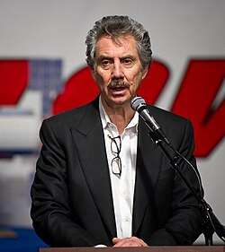

Robert Bigelow
Businessman

Founder of Bigelow Aerospace. His company BAASS held the AAWSAP contract, and he owned Skinwalker Ranch from 1996 to 2016. 1,2,3
Open in the interactive Watcher
Related
- AAWSAP His company held the AAWSAP contract
- Skinwalker Ranch Owned Skinwalker Ranch
Sources
- Robert Bigelow Wikipedia
- Advanced Aerospace Threat Identification Program Wikipedia
- Skinwalker Ranch Wikipedia